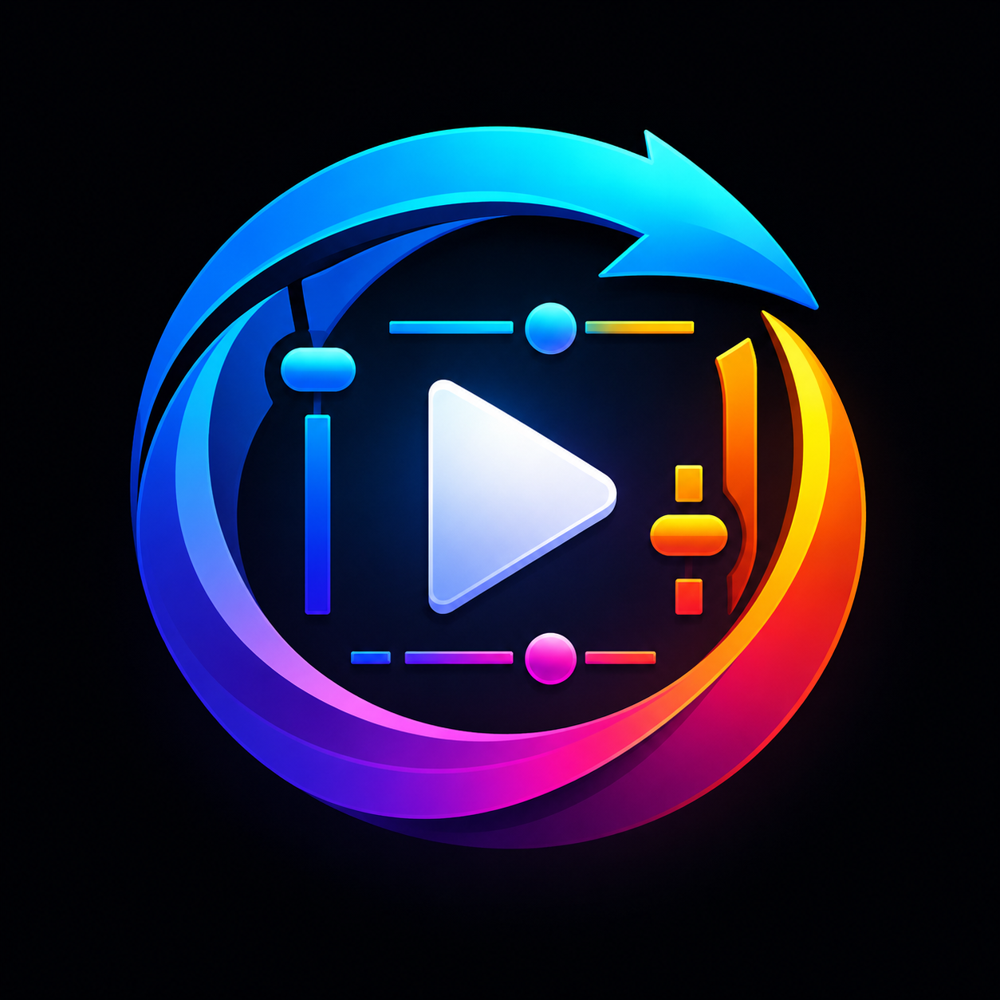

RotateFlow
Transform media without changing the source
Visible media is detected automatically.
Filters
Shortcuts enabled: R rotate, H/V flip, +/- zoom, arrows pan.

Transform media without changing the source
Visible media is detected automatically.
Shortcuts enabled: R rotate, H/V flip, +/- zoom, arrows pan.